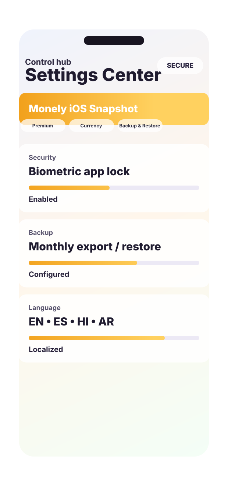

Paper receipts, saved photos, screenshots, and PDFs all fit into the same intake flow.
iPhone finance app
Receipts, bills, reports, assets, and shared ledgers in one calmer iPhone workflow.
Monely helps you scan receipts, import PDFs and screenshots, track recurring bills, review focused reports and forecasts, manage assets in your preferred currency, and collaborate across personal, family, or team ledgers without turning finance into a spreadsheet.
- AI-assisted receipt logging
- Photo and PDF import
- Recurring bills
- Reports and forecasts
- Asset tracking
- Shared ledgers
Monthly totals, category comparisons, forecasts, and data quality views stay separated and readable.
Portfolio value, allocation, and price freshness live in the same iPhone workspace.
Families and teams can collaborate while roles, context, and timeline views remain clear.
Capability map
Each section below maps to a real Monely workflow, so the landing page explains the app the same way the product behaves on iPhone.
The previous version grouped too many behaviors into a few broad blocks. This pass breaks the page into distinct product capabilities so visitors, reviewers, and search engines can scan the full finance workflow quickly.
Capture
Receipt intake
Scan receipts, import photos, pull in screenshots, and open PDFs from one starting point.
AI Structured extractionTurn receipt text into merchant, date, total, currency, and category-ready data.
Ledger Spending workspaceReview month, day, and transaction history in a live ledger instead of a flat list.
Reports Comparisons and trendsUse financial reports, compare months, and inspect merchant movement without leaving the app.
Bills Recurring paymentsSurface due-soon subscriptions, overdue bills, and optimization opportunities.
Forecast Cash-flow planningProject income, expense, and net forward so the next months are readable.
Sources Cards and accountsMeasure inflow, outflow, and net movement by the payment sources you actually use.
Assets Portfolio trackingKeep cash, metals, stocks, commodities, and crypto next to daily spending.
Shared Collaborative ledgersInvite members, switch ledgers, and review shared finance activity with context.
Control Locale, backup, and privacySet currency and language, lock the app, and keep recovery paths visible.
Bring receipts into Monely from the source you already have.
Receipt intake starts with the fastest option available in the moment: the camera, a saved photo, a screenshot, a PDF bill, or a manual entry when you want to type it in directly. That keeps capture friction low instead of forcing one rigid path.
- Scan paper receipts directly on iPhone.
- Import photos, screenshots, and PDFs into the same entry flow.
- Switch to manual add when speed matters more than OCR.
Image placeholder
Receipt Intake Screen
Replace with the add menu or capture screen showing Scan Receipt, Import Photo, Import PDF, and Manual Add.
Scan Receipt
Import Photo
Import PDF
Manual Add
Turn raw receipt text into organized finance fields before it lands in the ledger.
Monely uses OCR and parsing to read merchant names, dates, totals, and currencies, then presents the result in a form the user can review. The goal is speed with verification, not invisible automation that hides the important details.
- Extract merchant, date, total, currency, and category-ready values.
- Keep the important fields visible before save.
- Use AI analysis intentionally instead of as an always-on black box.
Image placeholder
OCR Review Screen
Replace with the receipt parsing or confirmation step that shows extracted text becoming structured transaction data.
Merchant
Date
Total
Category
Track spending in a workspace that stays readable at the month, day, and transaction level.
The main ledger is built for day-to-day finance review, not just data entry. Monely lets users move from month summaries into day-level activity and then into the underlying transactions without losing context.
- See expense, income, and net summaries in one place.
- Browse by calendar, month view, and transaction list.
- Drill from totals into the entries behind them.
Image placeholder
Expenses Workspace
Replace with the main expenses tab showing month summary, calendar navigation, and the transaction feed.
Month Summary
Calendar
Daily View
Transactions
Open the exact report that answers the question instead of one overloaded dashboard.
Monely separates financial reports into focused views such as month comparison, merchant price trends, and category movement. That makes it easier to understand what changed and then jump back to the entries responsible for the shift.
- Compare categories month over month.
- Inspect merchant movement and price trends.
- Keep drill-down paths back to the supporting records.
Image placeholder
Financial Reports Hub
Replace with the insights surface or report selector that shows Financial Reports, Compare Months, and Merchant Price Trend.
Financial Reports
Compare Months
Merchant Trends
See recurring payments before they surprise the month.
Recurring expenses are treated as a first-class workflow. Users can review due-soon bills, overdue payments, projected monthly subscription cost, and optimization views without piecing the picture together manually.
- Surface due-soon and overdue recurring payments.
- Track projected monthly subscription cost.
- Spot opportunities to consolidate or cancel recurring spend.
Image placeholder
Subscriptions Overview
Replace with the upcoming bills or subscriptions optimization screen that shows due dates, monthly cost, and actionability.
Upcoming Bills
Overdue
Monthly Cost
Optimization
Project future months so expense, income, and net are visible before they happen.
The forecast view extends Monely beyond history. Instead of only reporting what already happened, it shows projected financial movement so users can plan around recurring obligations and expected cash flow.
- View projected expense, income, and net together.
- Read multiple future months in one sequence.
- Use recurring payment data to make the next months less ambiguous.
Image placeholder
Cash-Flow Forecast
Replace with the forecast report showing projected monthly expense, income, and net over upcoming months.
Projected Expense
Projected Income
Projected Net
Understand which payment sources are driving inflow, outflow, and net movement.
Cards and accounts are not just setup data. Monely uses them as reporting dimensions so users can see how each source is performing across the ledger and whether the underlying mix of accounts is changing.
- Measure outflow and inflow by payment source.
- See net movement per card or account.
- Keep source performance tied to real transaction history.
Image placeholder
Payment Source Performance
Replace with the cards and accounts analytics screen that breaks down inflow, outflow, and net by source.
Cards
Accounts
Inflow
Outflow
Track portfolio value beside spending instead of in a disconnected tool.
Monely includes an asset workspace for cash, metals, stocks, commodities, and crypto with preferred-currency valuation. That keeps longer-term position and day-to-day spending inside one finance system with the same visual language.
- Review total value in the user’s preferred currency.
- Check allocation, holdings, and quote freshness.
- Keep assets and expenses in one iPhone workflow.
Image placeholder
Portfolio Dashboard
Replace with the assets tab showing total valuation, allocation, and the list of holdings across asset classes.
Cash
Stocks
Crypto
Allocation
Run personal, family, or team finance inside shared ledgers with visible membership and roles.
Monely supports multiple ledgers, active-ledger switching, invite codes, QR-based join flows, and member-aware reporting. The shared workflow is designed to keep context visible rather than flattening collaboration into a spreadsheet export.
- Invite members with codes or QR-based join flows.
- Switch between personal and shared ledgers cleanly.
- Review collaborative spending with member-aware analytics.
Image placeholder
Shared Ledger Controls
Replace with the collaboration screen showing member roles, invite options, and shared-ledger activity.
Invite Code
QR Join
Roles
Shared Reports
Adjust locale, protect access, and keep recovery options visible.
Trust features are part of the product surface, not hidden boilerplate. Monely gives users direct control over currency, language, security, backups, and restore paths so the finance workflow stays usable across households, regions, and devices.
- Set currency, exchange-rate context, and language preferences.
- Use Face ID or app lock to protect the finance workspace.
- Create backups and restore data when needed.
Image placeholder
Settings and Backup
Replace with the settings area that shows currency, language, security, and backup or restore controls.
Currency
Language
Face ID
Backup
One connected workflow
Monely stays useful as finance work grows from quick capture into planning, investing, and shared ledgers.
The app is designed so daily entries, recurring bills, forecasts, assets, and collaboration stay connected instead of getting split across separate tools and disconnected reports.
Local-first by default, explicit when data needs to move.
Monely treats finance data like finance data. Receipts and expense records are stored locally on the device by default. When a user asks for AI analysis, extracted receipt text can be sent to the configured analysis endpoint to produce structured results. Collaboration and live market data can also involve configured services when those features are enabled.
The static marketing site itself ships without analytics scripts or cookie banners. If you add tracking later, update the hosted privacy page before launch.
Face ID and app lock
Protect the finance workspace with biometric authentication so convenience does not replace control.
Backup and restore support
Create exportable backups, restore them when needed, and keep recovery paths visible instead of implied.
Freshness stays visible
Asset views surface pricing freshness rather than hiding it, which matters when market data is fetched from external providers.
Built for multilingual use
English, Spanish, Hindi, and Arabic support help Monely travel more naturally across households and teams.
Launch FAQ
Answers to the questions users and app-review pages usually need first.
This FAQ is designed to help both visitors and search engines understand what Monely does, how privacy works, and where support documentation lives.
Does Monely keep receipts and expense data on the device?
Yes. Monely stores receipts and finance records locally by default. Off-device transfer only happens when you intentionally use features such as AI analysis, collaboration, or live market data refresh.
When is AI used inside Monely?
AI is user-initiated. When you request analysis, extracted receipt text can be sent to the configured analysis endpoint to turn unstructured text into structured finance data.
Can I import PDFs, screenshots, and photos?
Yes. Monely supports scanning with the camera, importing saved images, and bringing in PDFs so receipts can enter the same capture pipeline from multiple sources.
What kinds of reports does the app include?
The app includes focused reports for monthly totals, category comparisons, financial forecasts, merchant or payment-source views, collaborative spending, and related drill-down flows.
Does Monely support shared finance?
Yes. The app supports shared ledgers, member-aware views, and collaboration flows intended for couples, families, or small teams that want one finance workspace.
Where should users go for privacy and support details?
Use the dedicated public pages linked from this site: the hosted privacy policy, the support page, and the terms and notices page.
Launch surface
Monely now presents the product, the trust model, and the public support paths on one clean domain.
Use the homepage to explain the app, then route users to privacy, support, and terms pages that stay consistent with the workflows described above.

Product
Workflows mapped clearly
Trust
Privacy, support, and terms
Control
Local-first with visible safeguards
Access
One clean public home for Monely